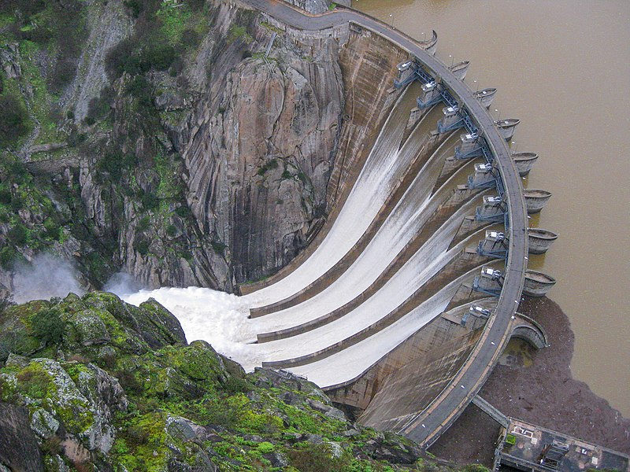
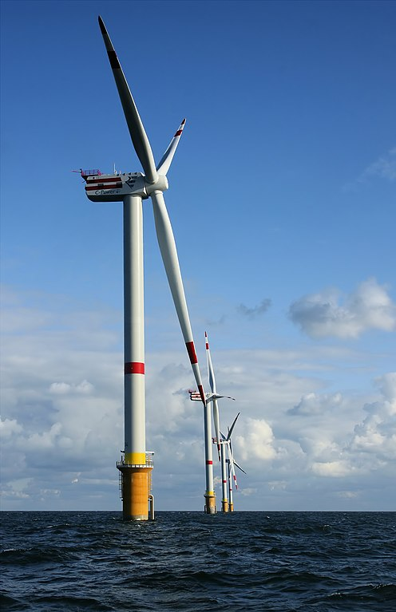
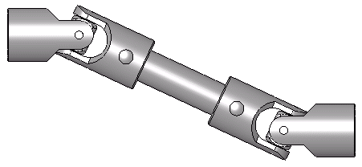
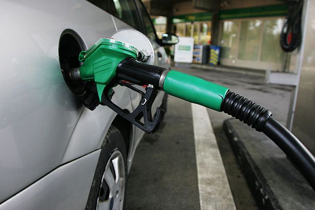
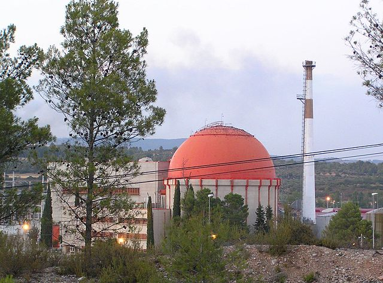
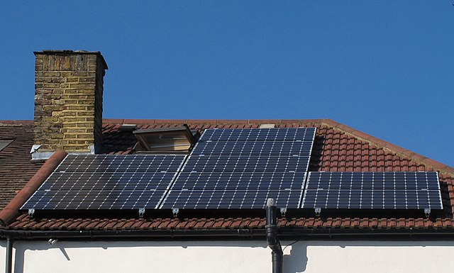
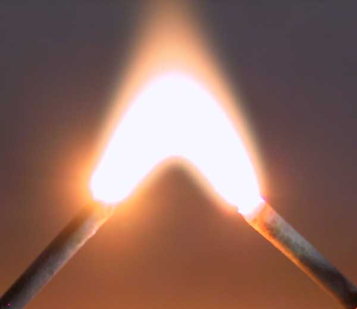

Energia¶
L’energia és molt important a la nostra societat perquè ens permet satisfer les necessitats bàsiques diàries, com tenir llum, cuinar el nostre menjar, escalfar les nostres cases i transportar -nos a diferents llocs.
L’ús excessiu d’energies fòssils (petroli, gas natural i carbó) està generant una crisi climàtica que ens obliga a canviar les nostres fonts d’energia tradicionals per a altres menys contaminants i més sostenibles, com l’energia solar o eòlica.
Començarem a estudiar les diferents formes o manifestacions d’energia i quines són les fonts d’energia primàries que utilitzem, per acabar estudiant amb detall l’electricitat.
Índex de contingut:
Formes d’energia¶
L’energia és la capacitat de fer feina o produir canvis.
Hi ha moltes formes o manifestacions d’energia. Cadascun té característiques diferents, però totes poden convertir -nos en treball o moviment, llum, calor, so o altres efectes útils per a nosaltres.
A continuació, veurem les formes d’energia més comunes i les que s’utilitzen més.
- Energia potencial
És l’energia que té un objecte degut a la seva posició ** ** en un camp gravitatori [#f1] _.
Per exemple, un objecte que es troba en una posició elevada té energia potencial gràcies a la gravetat de la Terra. Si deixem l'objecte, aquesta energia potencial es transforma en energia cinètica, amb la qual un altre objecte podria arrossegar i realitzar treballs.
Les preses hidràuliques acumulen energia potencial a l’aigua quan s’emmagatzema en una posició elevada. Quan cau de la presa, l’aigua transforma la seva energia potencial en cinètica, que mou una turbina. Finalment, la turbina mou un alternador que produeix electricitat.

La presa de l'arc d'Aldeadávila bruta a causa d'una inundació del riu.¶
Raiden32, CC BY-SA 4.0 International, vía Wikimedia Commons.- Energia cinètica
És l’energia que té un objecte a causa de la seva ** velocitat **.
Per exemple, una bola llançada a gran velocitat tindrà energia cinètica i pot moure altres objectes. L’energia eòlica és l’energia cinètica de l’aire en moviment. Quan un cotxe s’accelera, l’energia química de la gasolina en energia cinètica es transforma.
La lluna té energia cinètica quan orbita al voltant de la terra. A les marees dels oceans podem veure com es transfereix l’energia cinètica de la lluna a la terra.

Els escalfadors a Thornton Bank a 28 km de la costa (fora de la costa), a la part belga del mar del Nord.¶
Hans Hillewaert, CC BY-SA 4.0 International, vía Wikimedia Commons.- Energia mecànica
És l’energia que es transmet per ** desplaçament lineal ** o ** gir ** d’una peça mecànica d’una màquina.
Per exemple, l’eix d’una batedora transmet l’energia mecànica del motor a les fulles. La barra de connexió, que puja i avança, transmet energia mecànica des del pistó al cigonyal de manera que gira i mou el cotxe.

Ringan Cardan Board, que s’utilitza per transmetre energia.¶
Silberwolf, CC BY-SA 2.5 Generic, vía Wikimedia Commons.- Energia tèrmica
És una forma d’energia associada a ** temperatura ** d’un objecte. Es basa en el moviment intern dels àtoms i molècules de l'objecte. Com més gran sigui la temperatura d’un objecte, més ràpid es mouen les seves partícules.
És la forma d’energia més degradada i més difícil transformar, sobretot si es troba a temperatures baixes.
En totes les transformacions d’energia, hi ha pèrdues que acaben convertint -se en energia tèrmica.
Un exemple d’energia tèrmica és la transformació que es produeix en una caldera de calefacció. L’energia química del gas natural es transforma en alta temperatura durant la combustió, que serveix per escalfar els edificis.
- Energia química
És l’energia que es troba en els enllaços químics ** de combustibles, aliments o bateries.
Per alliberar aquesta energia és necessari provocar reaccions químiques, que en la majoria dels casos consisteixen a combinar combustibles amb oxigen. Això és el que fan els animals quan convertim hidrats de carboni de greixos i aliments en moviment i calor per mantenir -nos vius. Els combustibles fòssils són substàncies que produeixen energia quan es combinen amb l’oxigen de l’aire. Per exemple, l’energia tèrmica es produeix a l’hora de cremar carbó o gasolina.
També trobem aquest tipus d’energia química en bateries recarregables i en un sol ús. En aquest cas, l’oxigen no intervé en les reaccions.

El proveïdor de gasolina que porta el dipòsit d’un cotxe.¶
Rama, CC BY-SA 2.0 France, vía Wikimedia Commons.- Energia nuclear
És l’energia interna dels àtoms que s’allibera a les reaccions ** de fusió ** i ** fissió ** nuclear.
Exemples d’aquesta energia són l’energia del Sol, que es produeix per la fusió dels seus àtoms d’hidrogen i l’energia d’una central nuclear, que fixeix els àtoms d’urani. L’energia geotèrmica de la Terra també prové de l’energia nuclear de l’urani que es troba dins.

Planta d'energia nuclear de José Cabrera a Guadalajara.¶
Mr. Tickle, CC BY-SA 3.0 Unported, vía Wikimedia Commons.- Energia radiant
És l’energia que hi ha present a la llum ** ** o a la ràdio ** **.
És fonamental, perquè és la major part de l’energia que arriba a la terra gràcies al sol i que podem aprofitar amb les plaques solars.
Kitchem Microones converteix l’energia elèctrica en microones de ràdio que escalfen els aliments dels aliments.

Panells solars al terrat d’una casa.¶
David Hawgood, CC BY-SA 2.0 Generic, vía Wikimedia Commons.- Energia elèctrica
És l’energia associada al moviment d’electrons ** ** a través de cables conductors. És molt fàcil convertir altres tipus d’energia en energia elèctrica i viceversa. Per això, l’electricitat s’utilitza àmpliament per transportar altres formes d’energia d’un lloc a un altre.
Per exemple, l’energia mecànica d’un aerogenerador que es mou amb el vent es pot transportar fàcilment i gairebé instantàniament en forma d’energia elèctrica a una casa situada a centenars de quilòmetres. Aquesta energia elèctrica es pot transformar de nou en energia mecànica, per exemple, a la batedora o de qualsevol altra manera útil.
Els raigs de tempestes i descàrregues elèctriques que experimentem quan ens endurem un jersei són manifestacions naturals d’electricitat, però no podem aprofitar -les d’una manera útil.
Un desavantatge de l’energia elèctrica és que ** no es pot emmagatzemar fàcilment **, de manera que s’ha de consumir en el moment en què es genera. Per tal d’emmagatzemar l’electricitat, s’ha de transformar en energia química per bateries o energia potencial per plantes hidroelèctriques reversibles [#F2] _.
{kind=link}
{kind=link}
{kind=link}
{kind=link}
{kind=link}
{kind=link}
{kind=link}
{kind=link}
Transformació energètica¶
Segons el primer principi de la termodinàmica, l’energia no es crea ni es destrueix <https://es.wikipedia.org/wiki/primer_principio_de_la_termodin%C3%A1mica> __, només transforma un camí cap a un altre.
En aquests processos, sovint es necessiten diversos passos intermedis per produir la forma energètica desitjada.
Aquests són alguns exemples de conversions comunes entre formes energètiques:
- Energia potencial de l’aigua d’una presa en l’energia elèctrica.
- L’energia potencial ** de l’aigua d’una presa es transforma en energia cinètica quan es deixa caure l’aigua. A continuació, una turbina converteix aquesta energia cinètica en rotació d’un eix. El gir de l'eix mou un alternador, que converteix l'energia mecànica transmesa per l'eix en ** energia elèctrica **.
- Energia química del gas natural en energia elèctrica.
- L’energia química ** del gas natural es converteix en energia tèrmica dins del cremador d’una turbina, que al seu torn la converteix en la conversa de la turbina. Un alternador converteix l’energia mecànica de l’eix giratori en ** energia elèctrica **.
- Energia nuclear d’urani en energia elèctrica.
- L’energia nuclear ** ** de l’urani es converteix en energia tèrmica dins del reactor nuclear, que al seu torn es converteix en sobreescalfada. Una turbina de vapor converteix l’energia tèrmica del vapor d’aigua en energia mecànica d’un eix, que un alternador es converteix en ** energia elèctrica **.
- Energia química de la gasolina en energia cinètica d’un cotxe.
- L’energia química ** ** de la gasolina es converteix en energia tèrmica dins de la cambra de combustió, cosa que augmenta la pressió de gas i mou un pistó, produint energia mecànica. Aquesta energia mecànica es transmet a les rodes, que giren i mouen el cotxe, proporcionant ** energia cinètica **.
- Escalfar energia a la cuina.
- L’energia cinètica ** del vent mou les fulles d’un aerogenerador i produeix energia de rotació mecànica que s’aplica a un alternador per convertir -lo en energia elèctrica. L’energia elèctrica es transporta a les nostres cases on, quan passa per la resistència de l’HOP, es converteix en ** energia tèrmica ** per cuinar.
Fonts d’energia¶
Una font d’energia és un recurs natural del qual es pot obtenir energia. Segons la seva disponibilitat, podem distingir entre fonts d’energia renovables i fonts d’energia no renovables.
- Fonts d’energia no renovables
Aquestes fonts d’energia s’esgoten ja que les consumim perquè només hi ha reserves limitades.
La majoria d’aquestes fonts d’energia es basen en l’energia química ** ** que les plantes i els animals capturats del sol fa milions d’anys.
Un problema important que genera aquest tipus de fonts d’energia és la contaminació, l’escalfament global i la crisi climàtica.
- ** carbó **. És la font d’energia que produeix una major contaminació ambiental i emissions de gasos d’efecte hivernacle.
- ** Oil **. És el més utilitzat avui per a tot tipus d’usos, des del transport fins a la calefacció d’habitatges. També és molt contaminant.
- ** Gas natural **. És el menys contaminant dels tres tipus de fonts d’energia fòssil quan es crema, però també emet CO2 d’hivernacle. Està format per metà i, quan es perd a l’atmosfera, produeix un efecte hivernacle molt més gran que el del CO2.
- ** Nuclear **. Aquesta energia produeix pocs gasos d’efecte hivernacle, però genera quantitats importants de residus radioactius contaminants.
- Fonts d’energia renovables
Aquestes fonts d’energia es consideren inesgotables i, amb tècniques adequades, es poden utilitzar sense límit.
El problema de la majoria de les energies renovables és que són intermitents, per la qual cosa cal emmagatzemar excedents energètics per poder utilitzar -los més endavant.
- ** Solar **. És una energia radiant que prové de les reaccions de fusió nuclear que tenen lloc dins del sol.
- ** Vent **. L’energia eòlica prové de la calefacció pel sol de les masses d’aire a l’atmosfera.
- ** Hidràulica **. Prové de l’energia potencial dels rius acumulats a les preses. Té l’avantatge que es pot emmagatzemar fàcilment.
- Geotèrmica *. Prové de la calor interna de la terra produïda per les reaccions nuclears que hi ha al seu interior. Té l’avantatge de sempre estar disponible, tot i que només la Terra es pot utilitzar en algunes zones volcàniques.
- ** Biomassa **. És l’energia química que podem obtenir d’arbres o residus biològics que poden convertir -se en biogàs.
- ** Mareomotriz **. És l’energia que es pot extreure de l’aigua de mar gràcies al moviment produït per marees.
Energia elèctrica¶
L’energia elèctrica no és una font d’energia primària, sinó que s’ha de generar a partir de fonts d’energia primària. El motiu pel qual es genera electricitat és que és una energia molt fàcil de transportar, fàcil de controlar i convertir -se en altres formes d’energia de manera eficient.
{kind=link}

Arc elèctric de 3000 volts.¶
- Avantatges de l’electricitat
- Es pot obtenir fàcilment a partir d’altres formes d’energia (mecànica, química, calor, radiant, etc.).
- Es pot transportar fàcilment a grans distàncies.
- El transport és eficient i consumeix poca energia.
- Es pot convertir fàcilment en altres formes d’energia.
- Es pot controlar molt senzill.
- És molt net i no contamina al lloc on s’utilitza. Tot i que pot causar contaminació al lloc de generació.
- És més segur que altres formes d’energia.
- Desavantatges de l’electricitat
- No hi ha cap font principal d’electricitat, s’ha de generar a partir d’altres fonts primàries.
- Un alt percentatge d’electricitat que es genera actualment prové d’energia primària no renovable i contaminant, com ara energies fòssils o nuclears.
- No es pot emmagatzemar fàcilment. A la xarxa elèctrica, s’ha de generar la mateixa quantitat d’electricitat en cada moment que la consumida.
- Per al transport, es necessiten cables, de manera que és difícil d’utilitzar en transport marítim i aeri.
- Pot ser perillós i provocar incendis i descàrregues elèctriques si no es prenen les mesures de precaució necessàries.
Càlculs d’energia elèctrica¶
La fórmula d’energia elèctrica és la següent:
Les magnituds i les unitats són les següents:
E = energia en quilowatts-hora [kWh]
P = potència en quilowatts [kw]
t = temps en hores [h]
Clearing, tenim les altres formes de la fórmula d’energia elèctrica:
Aquesta fórmula ens permet realitzar càlculs relacionats amb la factura de l’electricitat, que és una de les despeses més importants de les llars.
Segons aquesta fórmula, l’energia que consumim depèn de la potència del dispositiu que connectem i del temps que el dispositiu està en funcionament.
Així, la nevera és un dels electrodomèstics amb menys potència, ja que consumeix al voltant de 150 watts. Tot i això, és l’aparell que consumeix més energia a casa, aproximadament un terç del total, ja que està en funcionament gairebé tot el dia de l’any.
Els electrodomèstics més potents solen ser els que generen grans quantitats de calor. En aquest grup hi ha el forn elèctric, el hob, l’assecador, l’escalfador d’aire, etc. La potència d’aquests electrodomèstics oscil·la entre 1000 i 3000 watts, de manera que gasten molta electricitat encara que estiguin poc temps encesos.
Exercicis¶
- Escalfador d'aire
Quina energia consumeix un escalfador d’aire de 2000 watts al mes si funciona durant 5 hores al dia?
Comencem a recopilar les dades del problema:
P = 2000W = 2KW
t = 5h/dia · 30DIAS = 150h
Escrivim la fórmula d’energia i substituïm els valors:
E = p · t
E = 2kw · 150h = 300kWh
- Bateries
Quina potència té una llanterna sabent que la seva bateria emmagatzema 4 watts-Hara de potència elèctrica i que té una durada de 10 hores en funcionament?
Comencem a recopilar les dades del problema:
E = 4Wh
T = 10h
Escrivim la fórmula d’energia i substituïm els valors:
P = E / T
P = 4Wh / 10H = 0,4W
- Cotxe elèctric
Un cotxe elèctric té una bateria de 100 quilowatts-hora. Quantes hores necessiteu per carregar la bateria completa en un punt de càrrega de 25 quilowatts de potència?
Comencem a recopilar les dades del problema:
E = 100kWh
P = 25kW
Escrivim la fórmula d’energia i substituïm els valors:
t = e / p
t = 100kWh / 25kW = 4 hores
Unitat amb preguntes¶
Unitat didàctica en format imprimible, amb preguntes senzilles de comprensió lectora.
Qüestionaris¶
Qüestionaris energètics.
- Qüestionari. Energia I.
- Qüestionari. Energia II.
- Qüestionari. Energia III.
- Qüestionari. Energia IV.
- Qüestionari. Energia V.
- Qüestionari. Energia VI.
- Qüestionari. Càlculs amb energia elèctrica.
Notes
| [1] | També hi ha altres formes d’energia potencial, com l’energia potencial elèctrica, que no es desenvoluparan en aquesta unitat. |
| [2] | Una planta hidroelèctrica reversible funciona com a bateria gegant. Absorbeix energia elèctrica de la xarxa per bombar aigua d’un dipòsit inferior a un altre situat a una alçada superior. Així, l’energia s’acumula en forma d’aigua elevada que es pot tornar a connectar en l’electricitat quan sigui necessari. |